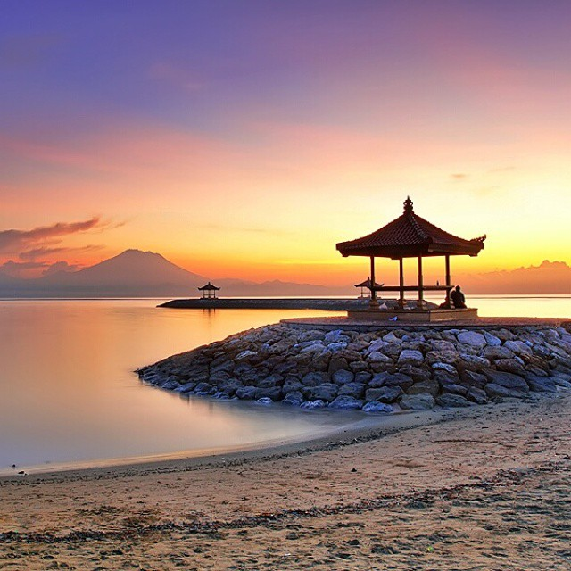

Pulau Papua

Papua, inilah tanah indah yang luas, memiliki hutan-hutan sangat alami dan puncak gunung bersalju menjulang tinggi di danau glasial. Papua merupakan provinsi terbesar dan paling timur di Indonesia, mencakup bagian barat pulau terbesar kedua di dunia.Papua, inilah tanah indah yang luas, memiliki hutan-hutan sangat alami dan puncak gunung bersalju menjulang tinggi di danau glasial. Papua merupakan provinsi terbesar dan paling timur di Indonesia, mencakup bagian barat pulau terbesar kedua di dunia.
Papua adalah tanah dengan alam yang mengagumkan, pemandangan pantainya sangat indah, membentang luas dari rawa, padang rumput yang sejuk, dan sungai-sungai yang mengukir jurang melalui hutan lebat. Bagian pulau yang paling banyak penduduknya adalah kabupaten Danau Paniai dan Lembah Baliem di sebelah timur.Papua merupakan kawasan konservasi terluas di Asia tenggara, berada pada ketinggian 0-4.884 m dpl dan tersebar di 4 Kabupaten, yaitu Kabupaten Jayawijaya, Mimika, Puncak Jaya dan Asmat.
Taman Nasional Lorentz bukanlah kawasan konservasi biasa seperti kawasan lainnya karena sejak 12 Desember 1999 PBB melalui UNESCO secara resmi menetapkannya sebagai situs alam warisan dunia karena memiliki lebih 43 jenis ekosistem, kawasan Daerah Tropis dengan gletser (Puncak Cartenz) dan Danau Habema yang menakjudkan dihiasi padang rumput alpin dan rawa-rawa.
Taman Nasional Teluk cenderawasih memiliki biota laut dan karang yang indah. Jangan lupakan juga melihat kemeriahan budaya adat yang ditampilkan dalam Festival Lembah Baliem dan Asmat. Di sini Anda dapat melakukan kegiatan pariwisata trekking, hiking, berburu dan berpetualang. Sementara di Taman Nasional Wasur di Merauke Anda akan melihat berbagai spesies mamalia unik.
Ibu Kota provinsi Jayapura terletak di perbukitan yang menghadap laut, dan dapat diakses dengan perahu dan pesawat. Di sinilah tempat Jenderal MacArthur mengumpulkan armadanya untuk menginvasi Filipina selama Perang Dunia II.Kata Papua sendiri berasal dari bahasa melayu yang berarti rambut keriting, mengacu pada penampilan fisik suku-suku asli Papua.